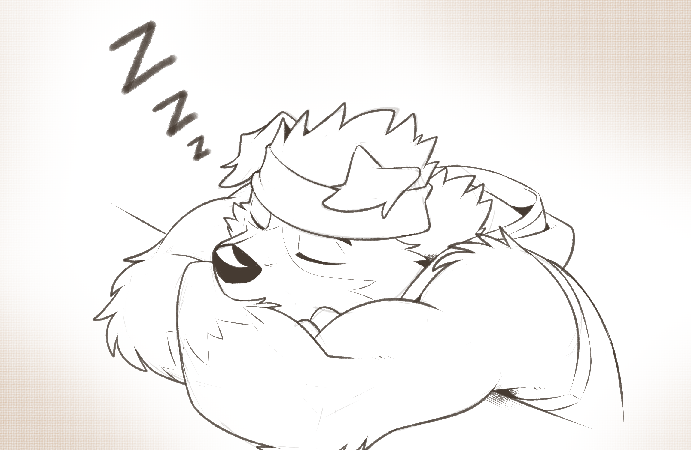

Dave's history arts
Dave wasn't born to be an artist and he wasn't born to have a drawing talent.
He was born a normal person like everyone else, not rich and not poor but his passion for drawing is something that everyone can rarely see everyday.
He started drawing when he was in high school, he did not have much thing to do beside studying or playing with his friends. While he was killing his time to pass by, he tried to draw some sketches that he liked drawing was some old cartoons that everyone knew about them. Those cartoons he were trying to draw were: Krypto the superdog, America Jake Long, and Balto.
So that when on, he likes drawing more and more of them and he becomes a artist and draw his fursona himself for his own fantasy comic.
ART SKETCHES

Sketch outfit version 1

Sketch outfit version 2
THESE ARE SKETCHES FROM DAVE CHARACTER

Sketch trading with artist

Sketch Dave alseep

Sketch angry Dave
ART COLORS


Color drawing from trending Eizouken movie


Dave original characters drawing colors
ARTS COLOR SHADING

.png)